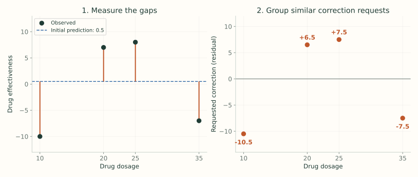
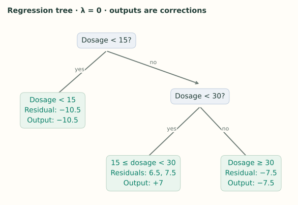
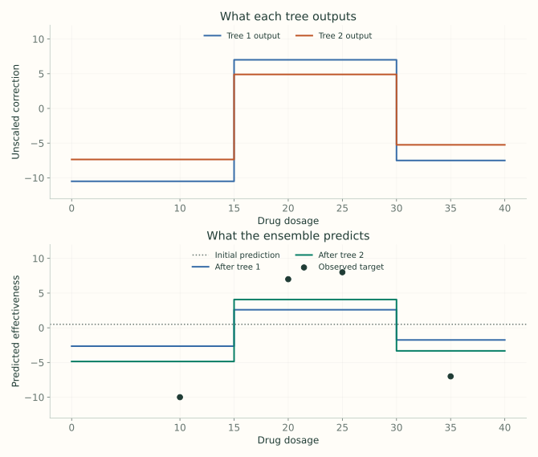

1. Regression: Build the First Tree
Notes on StatQuest with Josh Starmer · Regression: Build the First Tree · 25:46 video. Original explanations and redrawn figures accompany the video.
XGBoost starts with a prediction and adds trees that correct it. A leaf’s output is an amount to add. The feature rules decide which inputs receive that correction.
Start with what the prediction got wrong
Video 2:36 ↗The lecture predicts drug effectiveness from dosage. Fix the starting prediction at $0.5$ for every row. A residual is the observed value minus that prediction:
| Dosage | Observed effectiveness $y$ | Prediction | Residual $r=y-\hat y$ |
|---|---|---|---|
| 10 | −10 | 0.5 | −10.5 |
| 20 | 7 | 0.5 | 6.5 |
| 25 | 8 | 0.5 | 7.5 |
| 35 | −7 | 0.5 | −7.5 |
At dosage 10, the prediction is 10.5 too high, so we want a negative correction. At dosages 20 and 25, it is too low, so we want positive corrections. The tree still splits on dosage. Residuals tell it whether the rows grouped by a proposed split can share a useful correction.

What XGBoost adds to the boosting idea
The outer loop is still “predict, measure the remaining error, add a correction tree.” The new part in this lecture is how the tree is built: regularized scores compare possible groups, and a related formula supplies the correction each group will receive.
The observed effectiveness stays fixed throughout training. The residual column changes after every tree because the current prediction changes. A new input still needs only its dosage to follow the fitted rules.
Score the rows in one leaf
Video 4:07 ↗For squared-error regression, the lecture’s similarity score is
Add the residuals in that leaf, square the sum, and divide by the row count plus $\lambda$. Here $\lambda$ is a nonnegative regularization setting. Start with $\lambda=0$.
Why add the residuals first? A leaf gives everyone the same correction. Positive and negative requests cancel: $[-7,+7]$ have sum zero and no useful shared correction. Requests $[6.5,7.5]$ reinforce one another. The score measures how much a shared correction can help; it is not a general-purpose measure of pairwise similarity.
Before splitting, all four residuals occupy one leaf. Their sum is $-4$, so
Keep the leaf’s score and its output separate
The root’s score is 4, but its best shared correction at $\lambda=0$ is $-4/4=-1$. These numbers answer different questions. The correction says what to add to predictions. The score says how useful that optimized correction is when comparing this region with alternative regions.
If we used just the root correction, every prediction would move from 0.5 to −0.5, the mean of the four observed effectiveness values. That helps a little, but the positive and negative residuals still need very different changes. Splitting allows separate corrections instead of this one compromise.
A similarity score cannot tell you which direction to move because its numerator is squared. Both a strong upward request and a strong downward request can earn a high score. The unsquared numerator in the leaf-output formula preserves the sign.
Try a feature threshold and measure its gain
Video 8:23 ↗Try dosage $<15$. The left child contains $[-10.5]$; the right contains $[6.5,7.5,-7.5]$.
We need to know whether two separate corrections help more than the one correction available before the split. Subtract the parent’s score:
There are three possible ways to separate these four ordered dosages. The lecture places a threshold halfway between each adjacent pair.
| Candidate rule | Left residuals | Right residuals | Gain |
|---|---|---|---|
| dosage $<15$ | −10.5 | 6.5, 7.5, −7.5 | 120.33 |
| dosage $<22.5$ | −10.5, 6.5 | 7.5, −7.5 | 4.00 |
| dosage $<30$ | −10.5, 6.5, 7.5 | −7.5 | 56.33 |
The rule dosage $<15$ wins. Notice why the middle threshold is weak: both children still contain requests to move in opposite directions.
Why subtract the parent?
The parent already had the option of giving its rows one optimized correction. The gain measures the additional benefit of giving them two. Adding the children’s scores alone would count improvement that was already possible without introducing this split.
The candidate at 15 gives left output −10.5 and right output $6.5/3\approx2.17$. These outputs are temporary while we compare candidates. Once we split the right child again, its descendants will get their own corrections instead.
The gain 120.33 is neither a prediction nor a correction to add. It selects a rule. Only the final leaf reached by a row supplies that tree’s output.
Repeat inside the child that still mixes corrections
Video 11:01 ↗The right child still mixes two positive residuals with a negative one. Splitting it at 30 gives $[6.5,7.5]$ and $[-7.5]$:
Its other candidate, 22.5, gives only 28.17. Choose 30 and stop at depth 2 for this example.

At the next level, the “parent” in the gain calculation is the right child we are considering splitting. Its score is 14.08, not the original root score of 4. The comparison is always local: these two proposed children versus their own unsplit parent.
The fitted tree now defines three input regions: dosage below 15, dosage from 15 up to 30, and dosage at least 30. Within each region, the output is constant. The middle correction is 7 because $(6.5+7.5)/2=7$; it does not come from the numerical midpoint of the dosage interval.
Gamma asks whether a split earns its complexity
Video 13:02 ↗The lecture grows this tree, then checks splits from the bottom upward. A split whose gain falls below $\gamma$ can be pruned when its children are leaves.
With $\gamma=130$, the lower split survives because $140.17>130$. Its parent is retained to reach that useful subtree, even though the parent’s own immediate gain is 120.33. With $\gamma=150$, the lower split is removed first; the root split can then be removed too.
Removing every split leaves a constant root leaf. It can still have a nonzero correction; “no splits” does not by itself mean “no update.” In this example the root output would be $-4/4=-1$.
Checking from the bottom explains why the two gains are not treated as independent yes/no gates in the lecture’s pruning illustration. A parent supports the descendants beneath it. Once those descendants disappear, we can compare replacing the resulting two-leaf branch with a single leaf.
Growing and pruning details depend on the tree method. The numbers here reproduce the lecture’s bottom-up example; they are not a claim that every current growth method first constructs the same overgrown tree for every value of $\gamma$.
Lambda shrinks leaf corrections
Video 15:15 ↗Now set $\lambda=1$. For the same first split, the scores become
Its gain is $55.125+10.5625-3.2=62.4875$, smaller than before. This is the corrected value noted in the video description; the slide at 16:50 says 66.
The leaf’s output uses the same denominator, but does not square the numerator:
For the single residual $-10.5$, increasing $\lambda$ from 0 to 1 changes the correction from $-10.5$ to $-5.25$. For $[6.5,7.5]$, it changes $14/2=7$ to $14/3\approx4.67$. The extra denominator pulls corrections toward zero, with a stronger relative effect on smaller leaves.
The rows and threshold stay fixed at dosage < 15. This recalculates its score and both leaf outputs; it does not refit the whole tree.
Lambda and the learning rate act at different stages
Increasing $\lambda$ changes the leaf outputs and the scores used to select splits. It can therefore change the tree’s structure. The learning rate scales the chosen tree’s contribution after fitting. On the next round, that scaled update changes the residuals used to build another tree.
Even when two settings happen to give one leaf the same contribution, they need not produce the same future ensemble. They can have selected different splits or left different residual patterns elsewhere.
Add a small part of the leaf output
Video 19:29 ↗Return to the three-leaf tree with $\lambda=0$. Use learning rate $\eta=0.3$. A dosage of 10 follows the left branch, whose correction is $-10.5$:
We moved toward −10 without taking the full correction. The other leaves work the same way.
| Dosage | Leaf output | New prediction | New residual |
|---|---|---|---|
| 10 | −10.5 | −2.65 | −7.35 |
| 20 | 7 | 2.60 | 4.40 |
| 25 | 7 | 2.60 | 5.40 |
| 35 | −7.5 | −1.75 | −5.25 |
For a new dosage of 22, follow the same feature rules and return 2.60 after this first tree. Its true effectiveness and residual are not needed to choose a branch.
The next tree learns what is still wrong
Video 23:30 ↗Keep the first tree. Recompute the residuals from the updated predictions, fit another tree, and add its scaled corrections. After $M$ rounds, the prediction is
Here $w_m(x)$ means the output of the leaf reached by $x$ in tree $m$. The trees accumulate corrections; their outputs are not averaged.
Work through tree 2
Continue the unregularized example with depth 2 and learning rate 0.3. After the first tree, the residuals are $[-7.35,4.40,5.40,-5.25]$. Scanning the root candidates again gives gains about 58.96, 2.40, and 27.60 for thresholds 15, 22.5, and 30, so 15 wins again.
The right child again splits at 30. Its middle pair now has mean residual $(4.4+5.4)/2=4.9$, while the outer leaves output −7.35 and −5.25. The second tree has the same regions in this example, but new leaf values:
| Dosage | After tree 1 | Tree 2 output | After tree 2 | Remaining residual |
|---|---|---|---|---|
| 10 | −2.650 | −7.35 | −4.855 | −5.145 |
| 20 | 2.600 | +4.90 | 4.070 | +2.930 |
| 25 | 2.600 | +4.90 | 4.070 | +3.930 |
| 35 | −1.750 | −5.25 | −3.325 | −3.675 |
For a new dosage of 22, the first tree contributes $0.3(7)=2.1$ and the second contributes $0.3(4.9)=1.47$. Add both to 0.5 to get 4.07. The second tree is not a replacement for the first.
| Setting | What it controls |
|---|---|
| $\lambda$ | Penalizes leaf-output size and affects split scores. |
| $\gamma$ | Sets the required split benefit on the chosen gain scale. |
| $\eta$ | Scales the fitted tree’s addition to the ensemble. |
| Maximum depth | Limits how many feature decisions a path can contain. |

The gains above use the video’s score convention, also used by XGBoost’s basic tree scorer. Part 3 explains the factor of ½ in the paper’s objective. The examples deliberately set λ = 0; current XGBoost’s default λ is 1. See the parameter reference.